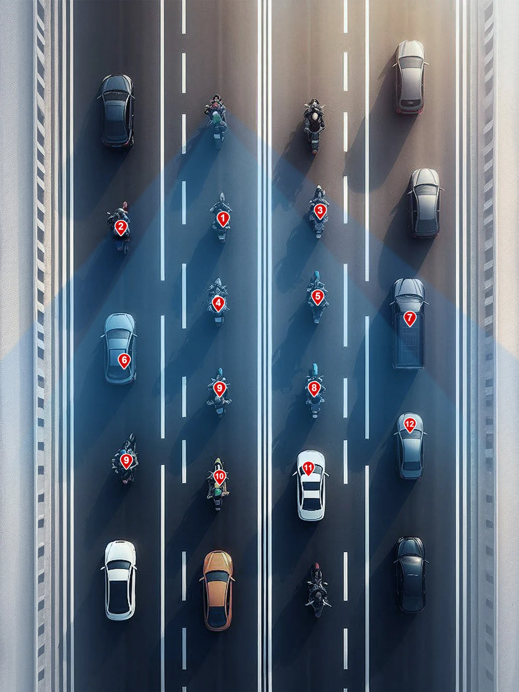
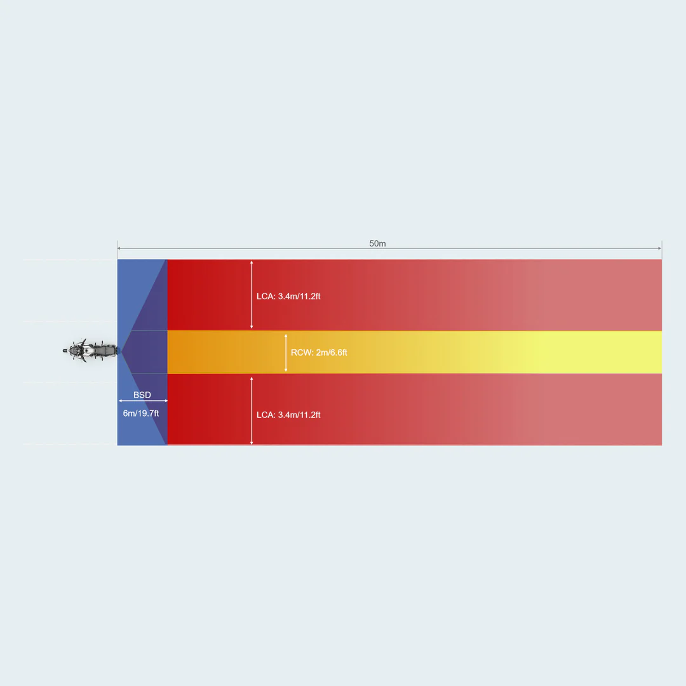
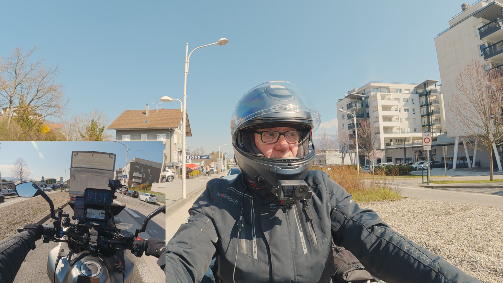
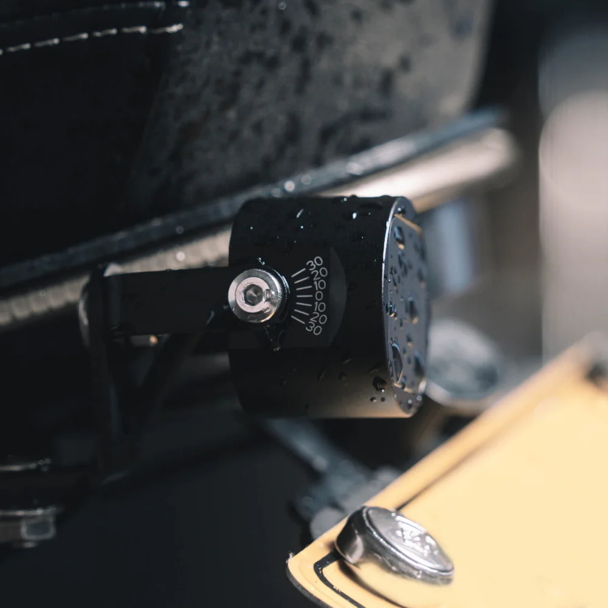
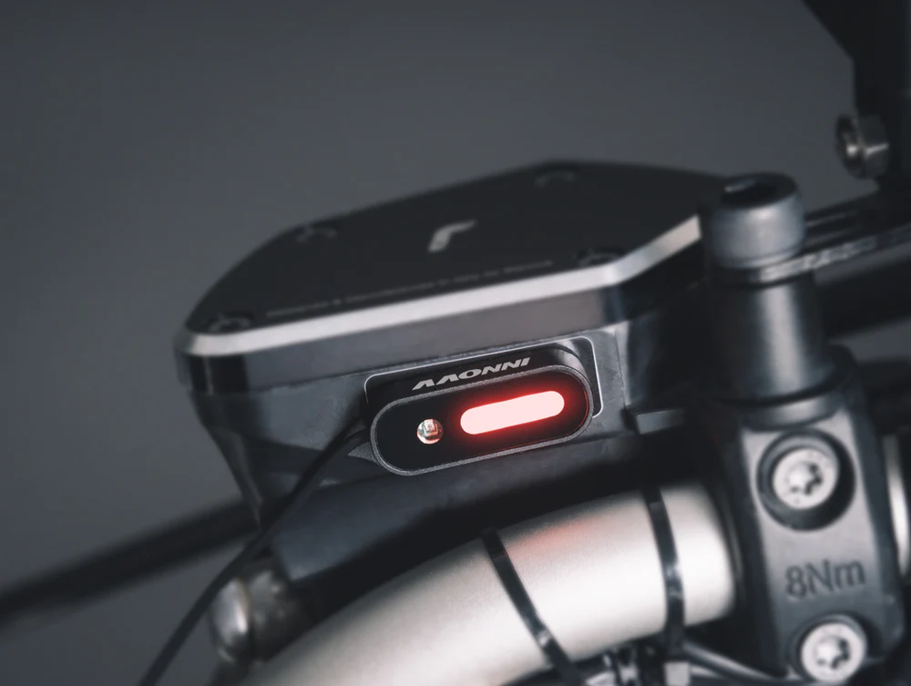
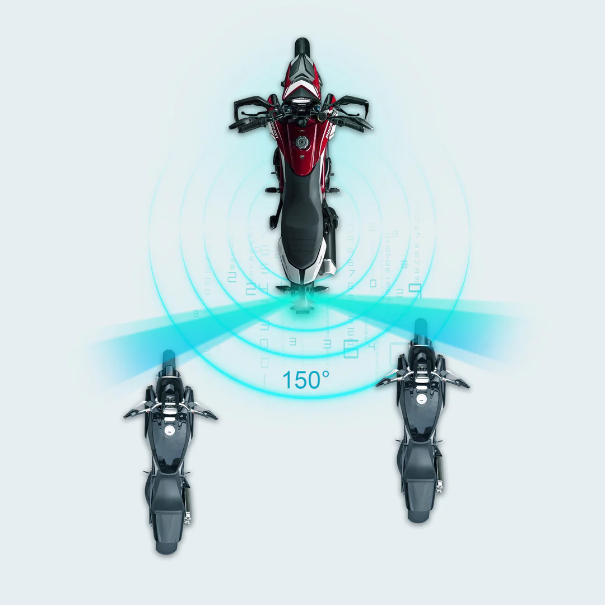
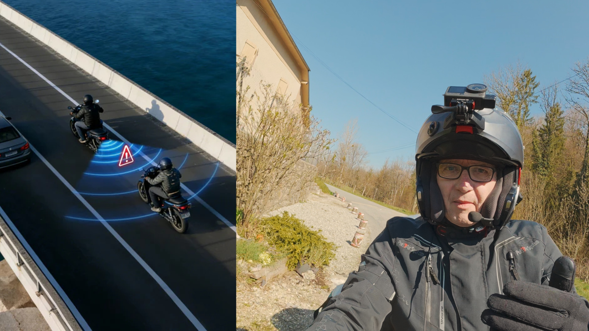
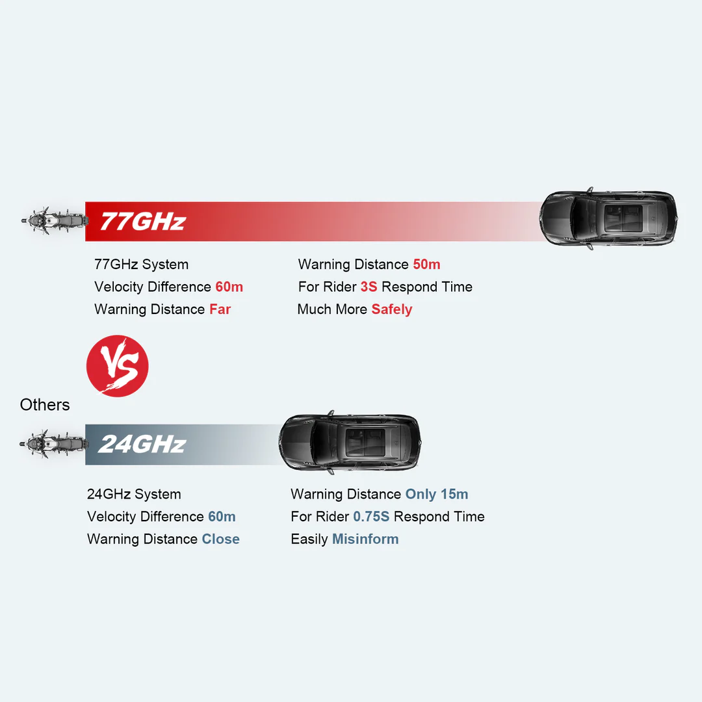
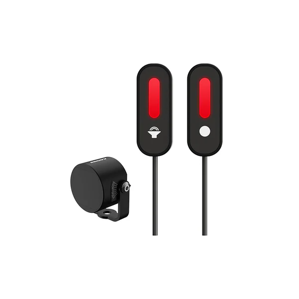

Au départ tu te dis c'est un gadget, oui c'est sympa, voire drôle... Mais après quelques milliers de kilomètres à parcourir l'Europe, je me suis décidé à tester le détecteur d'angle mort INNOVV BSD pour moto. L'expérience de mes 12h de route sous la pluie en rentrant de Norvège, coincé dans les bouchons allemands, m'a fait réaliser qu'il fallait que je trouve une solution pour améliorer ma sécurité. C'est là que le radar moto INNOVV est entré en jeu.
🔍 Présentation du détecteur d'angle mort INNOVV BSD

Caractéristiques techniques du radar INNOVV

La marque INNOVV m'a contacté pour tester leur système BSD (Blind Spot Detection). Après avoir refusé deux fois (j'en avais marre de démonter la moto), j'ai finalement regardé les spécifications du détecteur INNOVV :
- 64 cibles simultanées — c'est du délire comparé à la concurrence des radars moto classiques
- Détection jusqu'à 50 mètres — portée exceptionnelle pour un système BSD moto
- Angle de couverture 150° (contre 130° chez les autres détecteurs d'angle mort)
- Puissance radar 2,5 fois supérieure aux systèmes BSD classiques
- Même technologie radar que sur les BMW et Ducati haut de gamme
Qualité de fabrication INNOVV

Dès le déballage du système INNOVV BSD, on sent la différence. Les boîtiers radar sont lourds, en métal, ça respire la qualité. C'est du matériel haut de gamme signé INNOVV, et ça se voit... comme le prix d'ailleurs.
J'utilise le boîtier Thunderbox qui se déclenche automatiquement au contact pour alimenter mon détecteur INNOVV BSD. Super pratique pour alimenter tous mes périphériques sans intervention manuelle.
🏍️ Test terrain INNOVV : installation et premiers essais

Montage du système INNOVV sur ma NT1100

L'installation du détecteur d'angle mort INNOVV reste simple : deux fils à brancher et les capteurs radar à fixer. J'ai posé le radar gauche avec de la pâte plastique sur la boucle arrière — j'avais déjà ma caméra INNOVV ThirdEYE à l'emplacement prévu initialement.
Le plus délicat, c'est de démonter les carters latéraux sans rien casser. À 600-800 euros la pièce, on fait attention !
Le système INNOVV BSD en conditions réelles

Le déclencheur de ce test du radar INNOVV, c'était cette journée d'enfer sur l'autoroute allemande. 10h sous la pluie, engoncé dans tous mes équipements, impossible de faire une prise d'information correcte. À 120 km/h dans un trafic dense, tu n'as pas le luxe de prendre ton temps.
Le casque nous isole de l'environnement sonore. Sur autoroute, avec les régulateurs de vitesse, les voitures avancent à peine plus vite que nous et restent dans l'angle mort. On finit par les oublier. Franchement, sans cet essai du détecteur INNOVV, je ne l'aurais peut-être pas sur ma moto, mais aujourd'hui je ne m'en passerais plus.
🎯 À qui s'adresse le détecteur INNOVV BSD ?

Les motards qui roulent beaucoup

Si tu fais du kilométrage, surtout sur autoroute, le système INNOVV BSD prend tout son sens. Plus tu roules, plus tu apprécies d'avoir cette sécurité supplémentaire offerte par ce détecteur d'angle mort moto.
Situations critiques où le radar INNOVV excelle

- Pluie et conditions dégradées — quand les prises d'information deviennent compliquées, le radar INNOVV prend le relais
- Trafic dense autoroutier — véhicules qui restent longtemps dans l'angle mort, détectés par le BSD INNOVV
- Équipement hivernal — quand tu es engoncé et que les mouvements sont limités, le détecteur INNOVV compense
Plusieurs lecteurs soulignent que les distances de détection peuvent sembler courtes au début et que voir les voyants LED INNOVV sur les rétroviseurs demande un temps d'adaptation.
⚖️ Mon verdict sur le détecteur INNOVV BSD

Ce détecteur d'angle mort BSD d'INNOVV, c'est de la qualité. Les performances sont là, la fabrication est solide, et techniquement c'est au niveau des équipements constructeurs haut de gamme.
Les points forts du radar INNOVV BSD : Puissance de détection excellente, 64 cibles simultanées (record pour un détecteur d'angle mort moto), installation relativement simple avec le bon équipement, qualité de fabrication INNOVV irréprochable.
Les points à améliorer : Le prix élevé (justifié par la technologie) et la nécessité de s'habituer aux voyants LED sur les rétros.
Le système INNOVV BSD est-il indispensable ? Non. Est-ce un plus sécurité appréciable pour les gros rouleurs ? Clairement oui. Après mon expérience allemande, je comprends l'intérêt de ce radar moto. Mais il faut accepter d'investir dans sa sécurité.